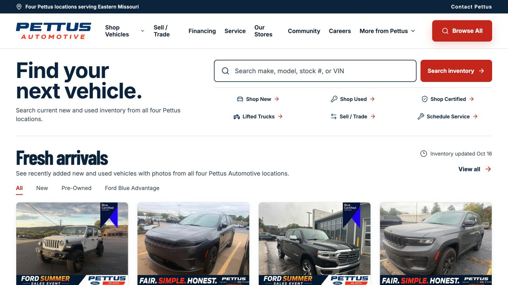

Search current stock
Useful new and used search, vehicle detail pages, pricing context, photos, availability, and source-aware updates.
Your website should know what is in stock, which store owns it, and what a shopper can do next. We connect the inventory source, vehicle pages, trade, finance, service, and lead paths in a site built for the way your dealership operates.
Independent stores and multi-rooftop groups. Franchise website, data, and media requirements are checked before scope and launch.

A car dealer needs accurate public vehicle facts and clear next steps. We make the source, site, and store handoffs visible before a design is considered complete.
Useful new and used search, vehicle detail pages, pricing context, photos, availability, and source-aware updates.
Calls and forms for sales, trade, finance, service, and parts reach the right store or department with a defined receipt check.
Responsive design, technical SEO, privacy controls, measured shopper actions, and a release process that checks what is actually public.
We map vehicle identity, source freshness, department ownership, lead handling, and the pages used by paid campaigns. Integrations and ad management are scoped to the exact store and accounts involved.
Need help with Marketplace listings?AutoLister is our separate, operator-controlled inventory listing subscription.Send your current URL, rooftop count, inventory provider, and the shopper paths that need to work better.
Request a car dealer website plan